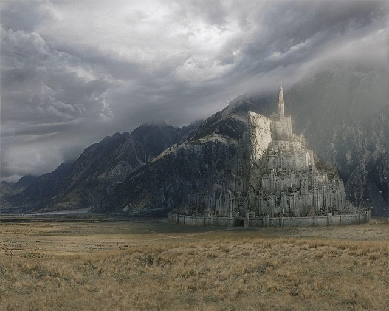
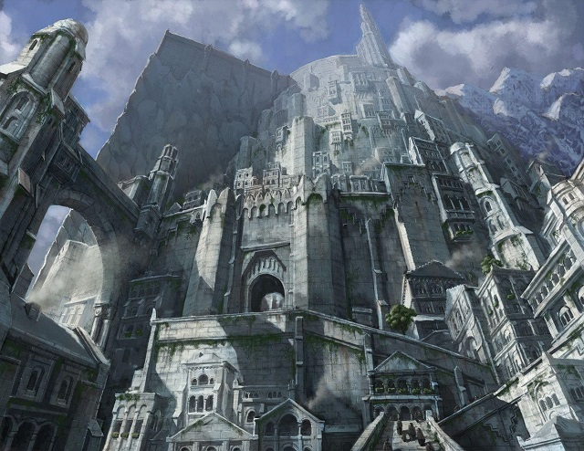
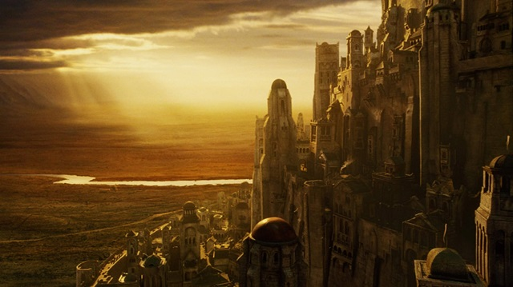

Minas Tirith — Gondor fehér városa
Minas Tirith, más néven a Fehér Város, Középfölde egyik legimpozánsabb és legfontosabb városa. A Pelennor mezői felett magasodik, hét szintjével és hatalmas falrendszerével védelmet nyújt Gondor királyságának fővárosaként.
Város körül
Minas Tirith környezete a Pelennor mezői és a Fehér-hegység között helyezkedik el. A város körül zöldellő füves síkságok és erdők terülnek el, amelyek a város számára természetes védelmet nyújtanak.
A város szerkezete
Minas Tirith hét szintje fokozatosan emelkedik a hegyoldalon, mindegyik szintet erős falak és kapuk választanak el egymástól. A legfelső szinten található a Királyi Palota és a Fehér Torony, ahonnan a király uralkodik.
A város jelentősége
Minas Tirith nemcsak katonai erődítmény, hanem kulturális és politikai központ is. Itt találhatók Gondor legfontosabb intézményei, könyvtárai és templomai. A város lakói büszkék örökségükre és hagyományaikra.
Minas Tirith a Gyűrű háborújában
A Gyűrű háborújában Minas Tirith kulcsszerepet játszik. Itt zajlik a híres Pelennor-mezei csata, ahol Rohan lovasai segítik Gondort Szauron seregei ellen. A város hősi védelme és a bátor harcosok tettei meghatározóak Középfölde sorsában.